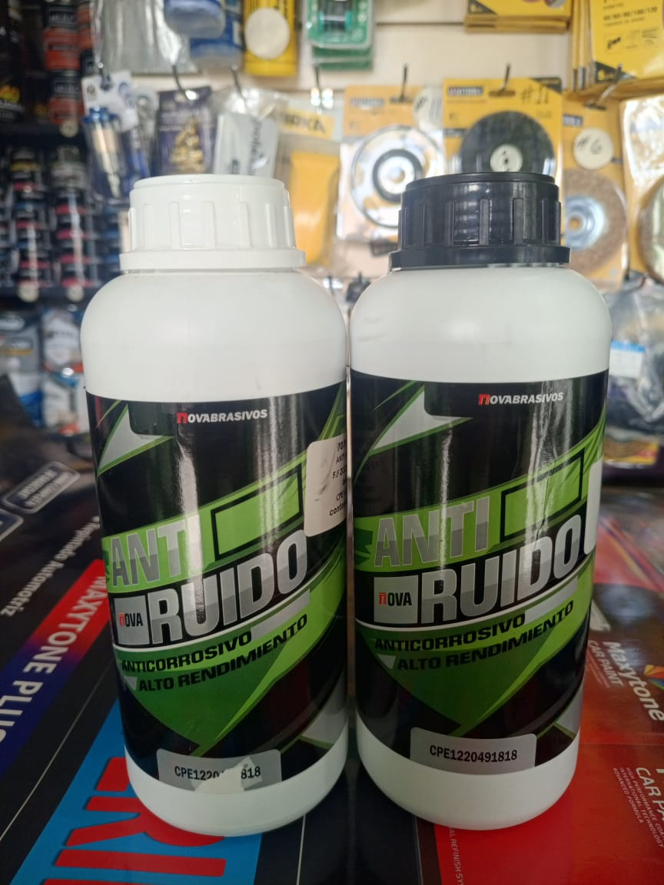

Nuestra Misión / Naturaleza
Comercializar y distribuir variedad de productos automotrices de alta gama que garanticen la máxima satisfacción del cliente, ofreciendo atención presencial y virtual con una gestión eficaz y confiable.
Fundada el 6 de junio de 2006 en Pueblo Nuevo, Barquisimeto, Rimcar's C.A. nació para responder a la necesidad de abastecimiento confiable de pinturas y acrílicos especializados de alta gama.
Comercializar y distribuir variedad de productos automotrices de alta gama que garanticen la máxima satisfacción del cliente, ofreciendo atención presencial y virtual con una gestión eficaz y confiable.
Consulta las especificaciones técnicas y disponibilidad de nuestros insumos en almacén.




Soluciones integrales diseñadas para optimizar el trabajo en el taller.
Acompañamiento personalizado para resolver problemas de aplicación, secado y preparación de superficies.
Precisión técnica para lograr el tono exacto que requiere tu vehículo o proyecto de latonería.
Suministro constante y precios competitivos para la red comercial y de servicios del estado Lara.
Visítanos en nuestra sede física o envíanos tu solicitud en línea.
Dirección: Calle 6 con Carrera 3A, Número 6-12, Parroquia Ana Soto, Pueblo Nuevo, Barquisimeto, Estado Lara (C.P. 3001).
Horario de Atención: Lunes a Viernes de 8:00 AM a 5:00 PM
Atención Directa: Contactar por WhatsApp
Redes Sociales: Instagram / Facebook / WhatsApp